Experiment
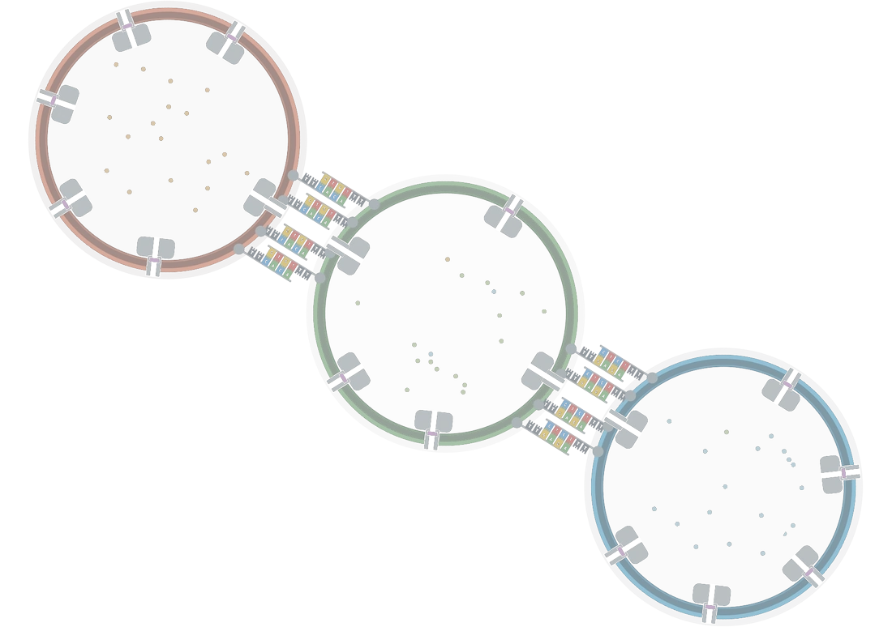
Abstract for the Experiment
The objective of this study was to specifically connect GUVs via DNA and facilitate the exchange of materials between GUVs. To achieve this objective, GUVs, α-hemolysin (αHL), and DNA were prepared, and the following experiments were conducted:
- Whether pores could be formed in the lipid membrane of GUVs by αHL
- Whether the pores formed by αHL could be closed by TRIMEB
- Whether the prepared DNA could specifically bind to the target
- Whether DNA could be inserted into the lipid membrane of GUVs
- Whether GUVs could be connected via DNA
The results confirmed that pores were formed in the lipid membrane of GUVs by αHL and that these pores could subsequently be closed by TRIMEB. In addition, DNA was confirmed to be inserted into the lipid membrane of GUVs, and GUVs could be connected via DNA. However, the efficiency of GUV–GUV connection was relatively low. One possible reason for the low connection efficiency is that some of the DNA-conjugated lipids may have migrated into the interior of the GUVs during GUV formation, resulting in a lower density of DNA-conjugated lipids on the outer surface of the lipid membranes of the GUVs.
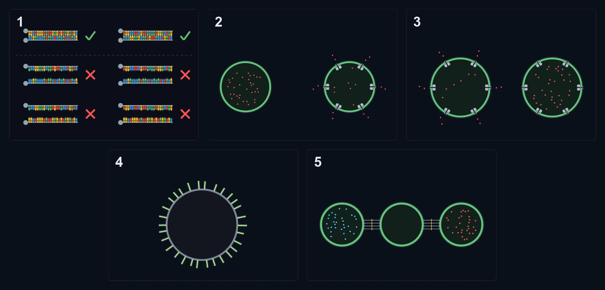
Method & Results
GUV Preparation
We made GUVs by the emulsion transfer method [1].
The lipid membranes of the GUVs contained green fluorescent molecules (NBD-PE), while their interiors contained red fluorescent molecules (sulforhodamine B).
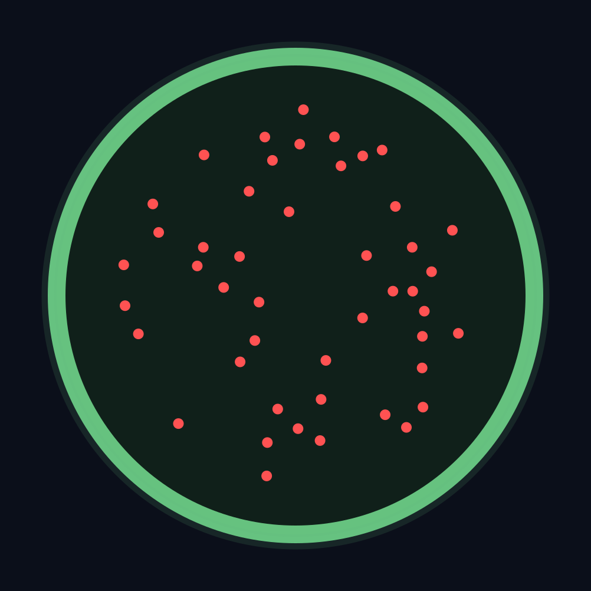
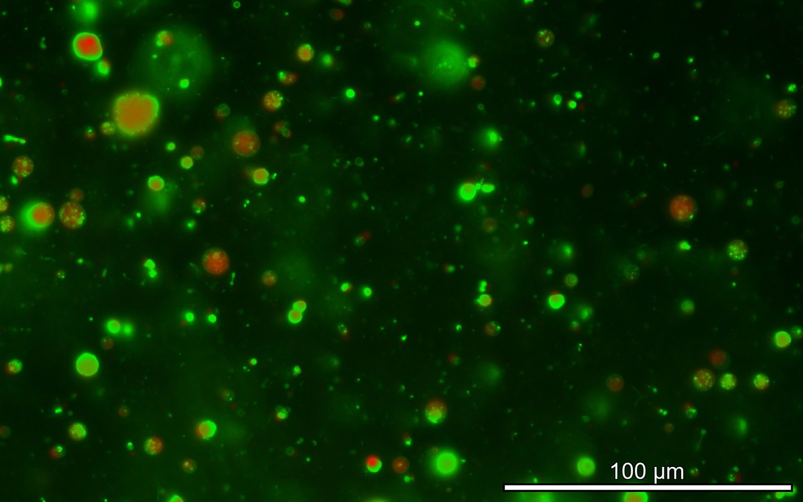
In Fig. 1(B), green fluorescence was observed on the surface of the lipid membranes of the GUVs, while red fluorescence was observed inside the GUVs, indicating that the GUVs were successfully prepared.
αHL Purification
αHL was expressed and purified using e. coli. The purified protein was then analyzed by SDS-PAGE to confirm successful purification of αHL.
As shown in Fig. 2, a band was observed at approximately 25–35 kDa (red).
Previous studies have reported that αHL has a molecular weight of approximately 33 kDa [2].
Therefore, the band observed in Fig. 2 was considered to correspond to αHL.
These results confirmed that αHL was successfully purified. In addition, a band was observed at approximately 60–75 kDa (orange).
This band was considered to possibly result from the formation of an αHL dimer.
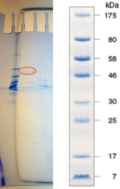
Pore Formation in GUVs with αHL
We added αHL (25 ng/µL) to the inner aqueous solution of the GUVs.
αHL is known to form pores in the lipid membranes of GUVs, which is expected to allow the fluorescent molecules inside the GUVs to leak out [3].
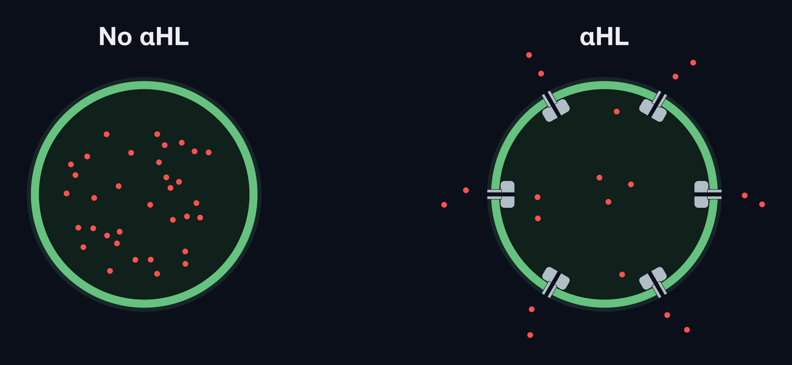
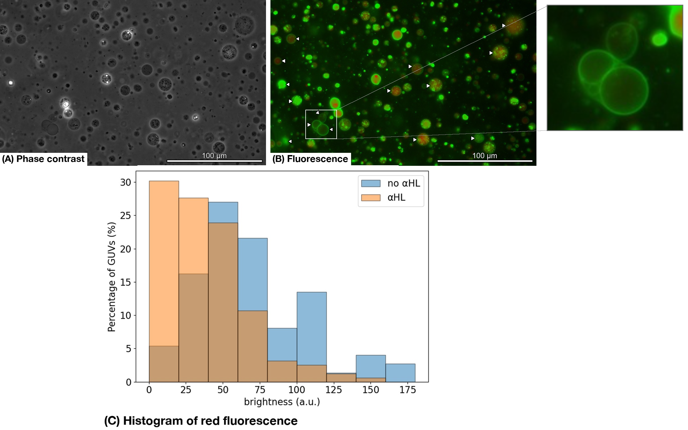
In Fig. 3(B), red fluorescence was observed leaking from the GUVs, indicating that the encapsulated contents had leaked out of the GUVs.
These results suggest that nanopores were formed in the lipid membrane of the GUVs.
Fig. 3(C) shows the distribution of red fluorescence intensity with and without the addition of αHL.
The fluorescence intensity was lower in the presence of αHL.
This decrease in fluorescence intensity supports that the red fluorescent molecules leaked out from the GUVs through pores formed by αHL.
Blocking the Pores with TRIMEB
We added αHL (25 ng/µL) to the inner aqueous solution of the GUVs and TRIMEB (4 mM) to the outer solution.
The addition of TRIMEB is known to suppress the leakage of substances through the pores formed by αHL in the lipid membrane of the GUVs [4].
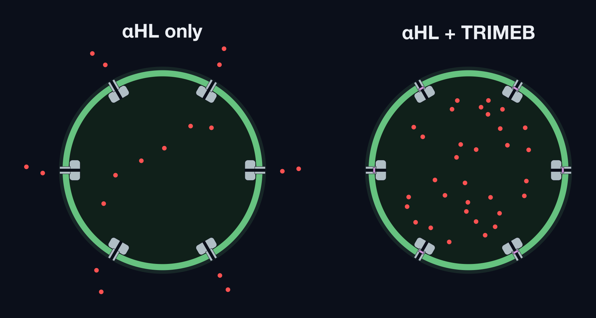
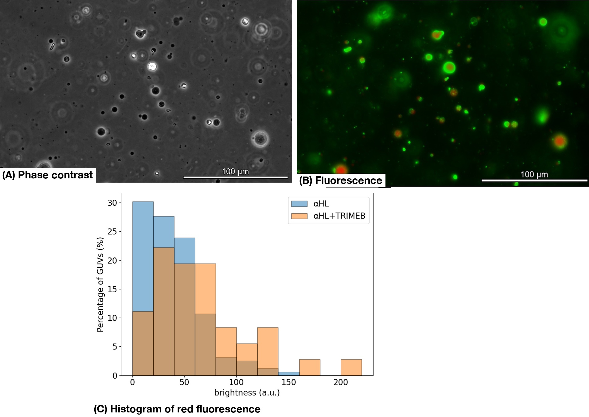
In Fig. 4(B), the red fluorescence intensity was higher than that observed in Fig. 3(B).
This indicates that TRIMEB successfully suppressed the leakage of the encapsulated contents.
Fig. 4(C) shows the distribution of red fluorescence intensity with and without the addition of TRIMEB.
The distribution indicates that the addition of TRIMEB suppressed the leakage of fluorescent molecules through the pores formed by αHL.
DNA modification with lipid
In this project, DNA is conjugated with DOPE-MAL through a thiol-maleimide coupling reaction to generate lipid-conjugated DNA.
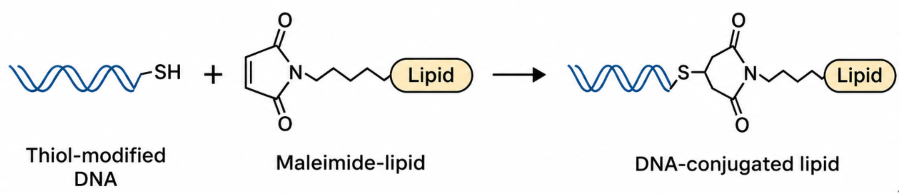
HPLC was used to separate lipid-conjugated DNA, unreacted DNA, and free lipids.
The presence of DNA in the collected fractions was confirmed by absorbance measurements.
Fig. 5 shows the results of HPLC and the absorbance measurements.
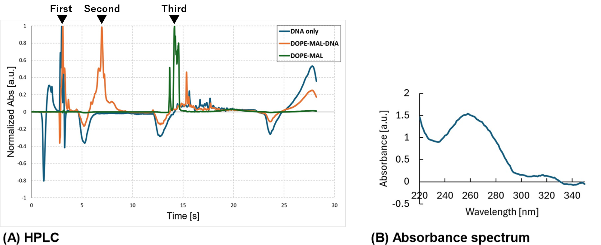
In the HPLC analysis, a peak appeared at a position where neither DNA nor maleimide-conjugated lipids had been observed. We interpreted this third peak as lipid-conjugated DNA.
Absorbance measurements were performed to confirm whether the solution recovered from that peak contained DNA. As a result, we observed an absorption peak at 260 nm specific to DNA, indicating that the recovered solution contained DNA.
DNA Strand Pairing
The DNA sequences used in this experiment were as follows:
L1: 5′-GCATCTACACTCAATACCCAGCC-3′ (SH)
R1: (SH) 5′-GGCTGGGTATTGAGTGTAGATGC-3′
L2: 5′-CTAGTCCATTGTAACGAAGGCCA-3′ (SH)
R2: (SH) 5′-TGGCCTTCGTTACAATGGACTAG-3′
L1 and R1, as well as L2 and R2, were designed to be complementary and to hybridize with each other.
Gel electrophoresis was used to investigate whether complementary DNA receptors form dimers in the absence of GUVs and whether non-complementary pairs exhibit nonspecific binding.
All six possible combinations of L1, R1, L2, and R2 were examined.
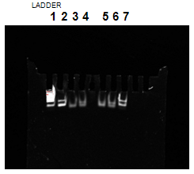
For L1 + R1 and L2 + R2, two closely spaced bands were observed.
The first band appeared at the same position as the bands in the other samples and was therefore considered to correspond to unbound DNA.
In contrast, the second band appeared higher than those observed in the other samples and was considered to correspond to a DNA complex formed by the binding of the complementary DNA strands.
These results confirmed that the complementary DNA strands successfully bound to each other.
Attaching DNA to GUVs
After the GUVs were prepared, lipid-conjugated DNA was added to insert the DNA into the GUV surface.
Unlike the GUVs used in the previous experiments, the lipid membranes of these GUVs did not contain green fluorescent molecules.
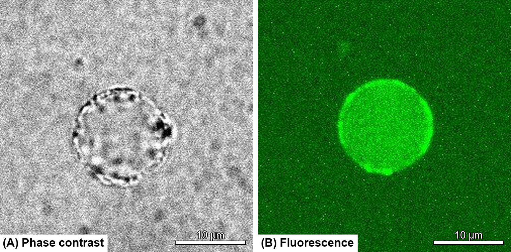
Fig. 7 shows the stained GUVs. Fluorescence was observed around the lipid membrane, indicating that the DNA was considered to be inserted into the lipid membrane of the GUVs.
Connecting GUVs with DNA
We prepared three kinds of GUVs with DNA by the method in the previous section. We adjusted them so that the fluorescence inside was red (sulforhodamine B), none, and blue (Alexa Fluor 647), in this order.
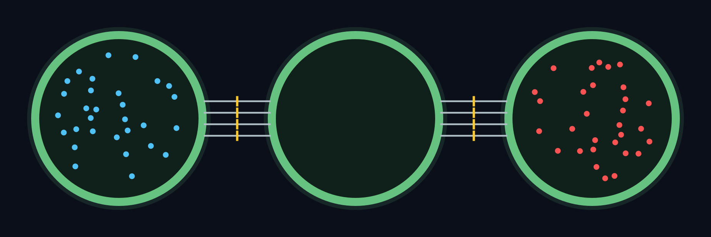
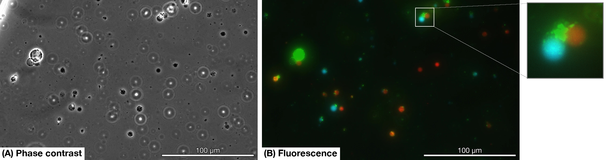
6.25% of the GUVs showed the intended connection.
This is considered to be because the lipid-conjugated DNA did not efficiently insert into the surface of the GUV membrane when the DNA was added to the GUVs, resulting in most of the DNA remaining suspended in the solution.
To prevent this, it will be necessary to investigate methods for more efficiently inserting the DNA into the GUV membrane after mixing the lipid-conjugated DNA with the GUVs.
Discussion
Among the components of ALiGN, pore formation in GUV membranes by αHL and pore blockage by TRIMEB were confirmed. DNA insertion into GUV membranes and DNA-mediated connections between GUVs were also confirmed. The intended connection was observed in 6.25% of GUVs. One factor that may have contributed to this result is that only a small fraction of the lipid-conjugated DNA added to the outer aqueous phase was inserted into GUV membranes. Future work will examine mixing conditions for lipid-conjugated DNA and GUVs to improve membrane insertion efficiency.
References for the Experiment
[1] Pautot, S., Frisken, B. J. & Weitz, D. A. Production of unilamellar vesicles using an inverted emulsion. Langmuir 19, 2870–2879 (2003). https://doi.org/10.1021/la026100v ↩ Back to the text
[2] Chatterjee, A., Roy, A., Satheesh, T., Das, P. P., Mondal, B., Kishore, P., Ganji, M. & Dutta, S. Structural insights into pre-pore intermediates of alpha-hemolysin in the lipidic environment. Nat. Commun 16, 6348 (2025). https://doi.org/10.1038/s41467-025-61741-x ↩ Back to the text
[3] J. Lemière, K. Guevorkian, C. Campillo, C. Sykes, and T. Betz. α-Hemolysin membrane pore density measured on liposomes. Soft Matter 9, 3181-3187 (2013). https://doi.org/10.1039/C3SM27812C ↩ Back to the text
[4] Chakraborty, T. & Wegner, S. V. Cell to cell signaling through light in artificial cell communities: glowing predator lures prey. ACS Nano 15, 9434-9444 (2021). https://doi.org/10.1021/acsnano.1c01600 ↩ Back to the text